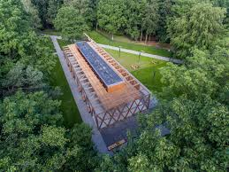
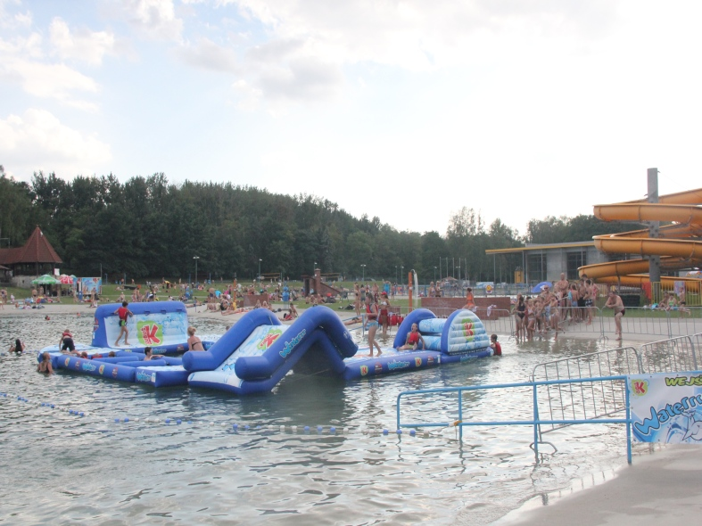
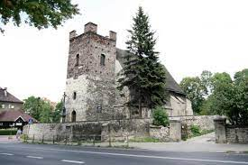

|  |

|
 |  |
Gliwice słyną z wielu wspaniałych miejsc. Historycznych, funkcjonalnych, widowiskowych. Dużo z nich nie jest jednak znane, gdyż żyją w cieniu swoich głośniejszych sąsiadów.
Na tej stronie chciałbym więc zaprezentować parę również ciekawych, a nie tak znanych miejsc w Gliwicach.
Jeżeli więc jesteś zainteresowany, to...Zapraszam